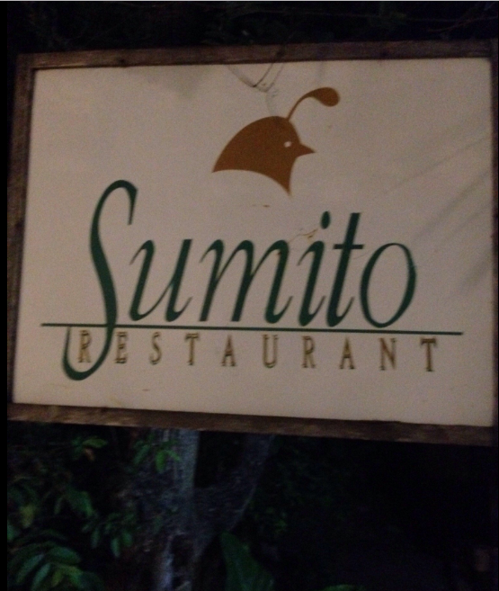

BusquedaAvanzada
Registrarse
Login
Logout
Langar De Sumito

la cocina venezolana siempre ha tenido el estigma de comida casera gustosa pero sin potencial para llegar a competir en los altos niveles de la gastronomía. Afortunadamente eso ha cambiado en los últimos años gracias al emprendimiento de muchos chefs y hoy podemos sentir que la sencillez de nuestras recetas puede devenir en platos inolvidables. Esa experiencia es posible vivirla en el Langar de Sumito. Visitar Margarita conlleva comer en su restaurante y conocer su propuesta gastronómica de sabores confrontados en combinaciones armoniosas de ingredientes autóctonos. agréguele lo sereno del lugar y una atención cordial de todo el equipo con la sonrisa constante de quien hace las cosas con orgullo y las hace bien. buen apetito.
Dirección:
Calle Larez con Calle El Dique, La Asunción, Isla de Margarita 6311, Venezuela
Teléfono:
+58 295-6384592
Servicios:
Reservaciones, Asiento, Meseros, Sillitas altas disponibles, Acceso para silla de ruedas, Sirve alcohol, Acepta Mastercard, Acepta Visa, Wi-Fi gratis, Acepta tarjetas de crédito
Horario:
domingo
9:00 a. m. - 10:30 p. m.
lunes
10:00 p. m. - 10:00 p. m.
martes
10:00 p. m. - 10:00 p. m.
miércoles
10:00 p. m. - 10:00 p. m.
jueves
10:00 p. m. - 10:00 p. m.
viernes
10:00 p. m. - 10:30 p. m.
sábado
9:00 p. m. - 10:30 p. m.